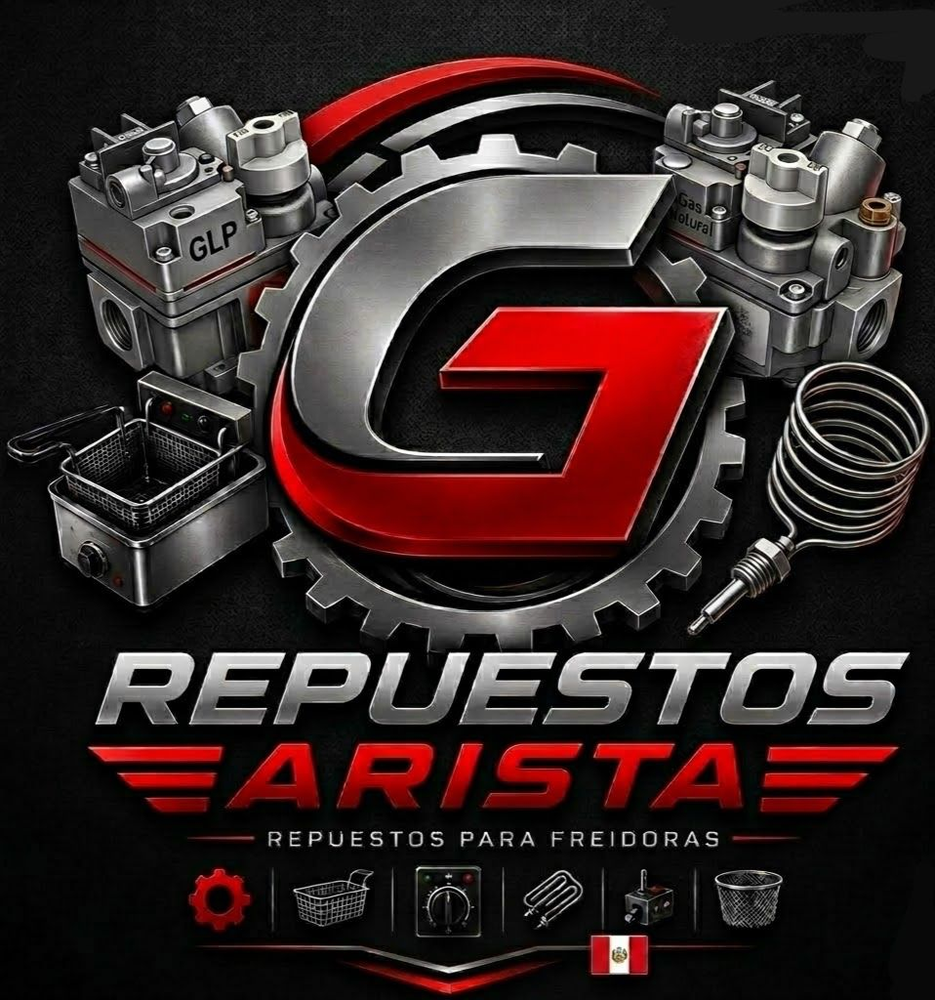

VENTA DE REPUESTOS Y MATENIMIENTOS DE FREIDORAS INDUSTRIALES
Contactanos al numero o mas informacion al ...
902402318
Vista los acesorios de repuerto de friedoras industriales
Robertshaw GLP y Gas Natural
Las válvulas Robertshaw son utilizadas en freidoras industriales para controlar el flujo de gas de manera segura y eficiente.
Características
- Compatible con GLP y Gas Natural.
- Alta resistencia al calor.
- Fácil instalación.
- Larga vida útil.
Se utilizan en freidoras industriales, cocinas comerciales y equipos gastronómicos que funcionan con gas.
Beneficios
- Mayor seguridad.
- Mejor control de temperatura.
- Ahorro de gas.
- Excelente rendimiento.
Válvulas de Termostato de Gas
Las válvulas de termostato de gas son componentes esenciales en las freidoras industriales, ya que permiten regular el flujo de gas y controlar la temperatura de cocción de manera precisa.
Características
- Control preciso de temperatura.
- Fabricadas con materiales resistentes al calor.
- Compatibles con GLP y Gas Natural.
- Fácil instalación y mantenimiento.
Aplicaciones
Se utilizan en freidoras industriales, cocinas comerciales, hornos y equipos gastronómicos que requieren control de temperatura.
Beneficios
- Mayor seguridad durante el funcionamiento.
- Ahorro en el consumo de gas.
- Mejor rendimiento del equipo.
- Mayor vida útil de la freidora.
Recomendaciones
Se recomienda realizar revisiones periódicas para garantizar un correcto funcionamiento y evitar fugas o fallas en el sistema.
Kit de Piloto y Seguridad de Gas
¿Qué es un Kit de Piloto?
El kit de piloto y seguridad de gas es un componente fundamental en las freidoras industriales. Su función es encender el quemador de manera segura y cortar el suministro de gas automáticamente en caso de que la llama piloto se apague.
Componentes del Kit
- Piloto: Genera la llama de encendido.
- Termopila: Produce energía para mantener abierta la válvula de gas.
- Termocupla: Detecta la presencia de la llama.
- Conexiones: Permiten la instalación segura del sistema.
Ventajas
- Mayor seguridad en el funcionamiento.
- Evita fugas de gas.
- Encendido rápido y eficiente.
- Mayor durabilidad del equipo.
- Reduce riesgos de accidentes.
Aplicaciones
Este kit es utilizado en freidoras industriales, cocinas comerciales, hornos y diversos equipos que funcionan con gas GLP o Gas Natural.
Recomendaciones
- Realizar mantenimiento periódico.
- Verificar el estado de la llama piloto.
- Revisar las conexiones de gas regularmente.
- Utilizar repuestos originales para mayor seguridad.
Termostato de Control de Temperatura
¿Qué es un Termostato?
El termostato es un dispositivo encargado de regular y controlar la temperatura del aceite en las freidoras industriales. Su función es mantener una temperatura estable para garantizar una cocción uniforme y segura.
Características
- Control preciso de temperatura.
- Alta resistencia al calor.
- Compatible con diferentes modelos de freidoras.
- Fácil instalación y mantenimiento.
Beneficios
Un termostato en buen estado ayuda a mejorar el rendimiento de la freidora y evita el sobrecalentamiento del aceite.
- Ahorro de energía y gas.
- Mayor seguridad en el equipo.
- Mejor calidad en la cocción de los alimentos.
- Mayor vida útil de la freidora.
Aplicaciones
Se utiliza en freidoras industriales, cocinas comerciales, restaurantes, pollerías, cafeterías y otros negocios gastronómicos que requieren un control eficiente de la temperatura.
Recomendaciones
Se recomienda revisar periódicamente el funcionamiento del termostato para garantizar una temperatura correcta y evitar daños en el equipo.
Reguladores de Precion de gas Alianca
¿Qué son las Termopilas?
Las termopilas Robertshaw son dispositivos de seguridad utilizados en equipos a gas, como freidoras industriales, hornos, cocinas y calentadores. Su función principal es generar energía eléctrica a partir del calor de la llama piloto para mantener abierta la válvula de gas de manera segura.
Características Principales
- Alta resistencia: Fabricadas para soportar altas temperaturas.
- Seguridad: Cortan el suministro de gas cuando la llama se apaga.
- Compatibilidad: Utilizadas en diversos equipos industriales a gas.
- Durabilidad: Diseñadas para un funcionamiento prolongado.
Aplicaciones
- Freidoras industriales.
- Hornos a gas.
- Cocinas industriales.
- Calentadores de agua.
- Equipos gastronómicos.
Ventajas
Las termopilas Robertshaw ofrecen un funcionamiento confiable y seguro, permitiendo que los equipos trabajen de manera eficiente. Además, ayudan a prevenir fugas de gas al cerrar automáticamente el paso cuando no existe una llama activa.
Mantenimiento
- Limpiar periódicamente la punta de la termopila.
- Verificar que la llama piloto la caliente correctamente.
- Revisar conexiones eléctricas y de gas.
- Reemplazar la pieza si presenta desgaste o fallas.
Reguladores de Presión de Gas Alianza
¿Qué son los Reguladores de Presión de Gas?
Los reguladores de presión de gas Alianza son dispositivos diseñados para controlar y mantener estable la presión del gas que llega a equipos industriales y domésticos. Su función principal es garantizar un suministro seguro y constante, evitando variaciones que puedan afectar el funcionamiento de los equipos.
Características Principales
- Alta seguridad: Reducen riesgos por exceso de presión.
- Material resistente: Fabricados con materiales de alta calidad.
- Fácil instalación: Compatibles con diferentes sistemas de gas.
- Rendimiento eficiente: Mantienen un flujo constante de gas.
Aplicaciones
- Freidoras industriales.
- Hornos y cocinas industriales.
- Parrillas y planchas a gas.
- Restaurantes y negocios gastronómicos.
- Sistemas domésticos de gas GLP y Gas Natural.
Ventajas
Los reguladores Alianza permiten un mejor control del consumo de gas, aumentan la seguridad de los equipos y prolongan la vida útil de los quemadores, válvulas y demás componentes del sistema.
Mantenimiento
- Revisar periódicamente posibles fugas.
- Verificar el estado de las conexiones.
- Mantener limpio el regulador y sus accesorios.
- Reemplazar el regulador cuando presente desgaste o daños.
Termopar para Equipos a Gas
¿Qué es un Termopar?
El termopar es un dispositivo de seguridad utilizado en equipos que funcionan con gas, como freidoras industriales, hornos, cocinas y calentadores. Su función principal es detectar la presencia de la llama piloto y permitir el paso del gas únicamente cuando la llama está encendida.
Características Principales
- Seguridad: Evita fugas de gas cuando la llama se apaga.
- Alta resistencia: Soporta temperaturas elevadas.
- Fácil instalación: Compatible con diferentes válvulas de gas.
- Durabilidad: Fabricado para un uso continuo y prolongado.
Funcionamiento
Cuando la llama piloto calienta la punta del termopar, este genera una pequeña corriente eléctrica que mantiene abierta la válvula de seguridad. Si la llama se apaga, deja de producir energía y la válvula se cierra automáticamente, cortando el suministro de gas.
Aplicaciones
- Freidoras industriales.
- Hornos a gas.
- Cocinas industriales.
- Calentadores de agua.
- Equipos gastronómicos y comerciales.
Ventajas
El termopar brinda mayor seguridad al sistema de gas, ayuda a prevenir accidentes y garantiza un funcionamiento confiable de los equipos industriales y domésticos.
Mantenimiento
- Limpiar periódicamente la punta del termopar.
- Verificar que la llama piloto lo caliente correctamente.
- Revisar el estado de las conexiones.
- Reemplazar el termopar si presenta desgaste o fallas.